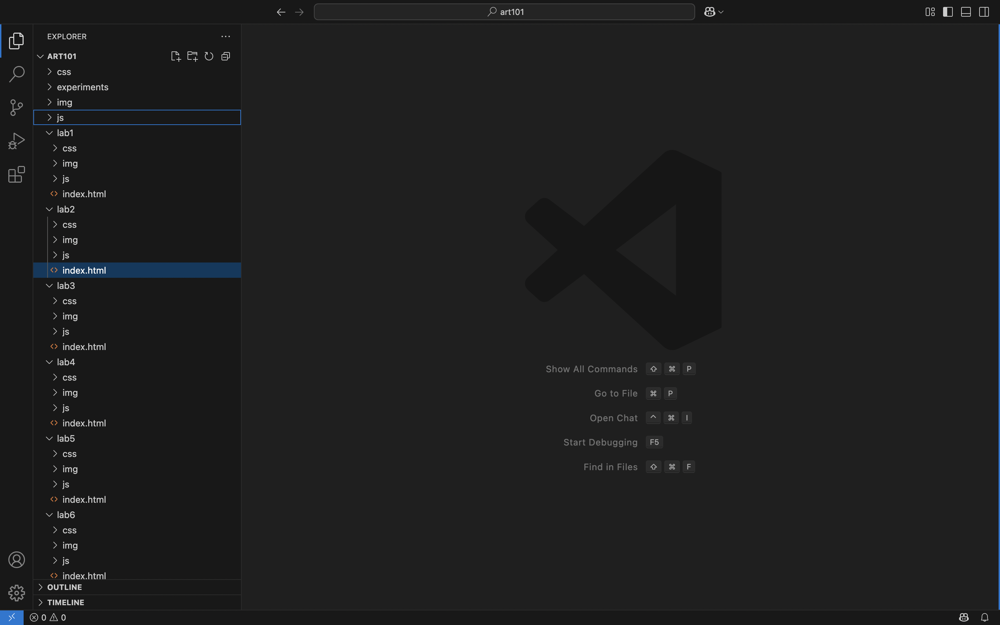

Lab 3 - file structure and file transfer
Challenge
For this lab, we were tasked to structure our lab folders and files in a specific hierarchy. We were also tasked to edit our homepage and lab 3 HTML and CSS files by imbedding an image and incorporating links to other lab pages
Problems
I messed up the spelling and syntax of the code a few times but was able to fix each error!
Reflection
I put a lot of effort and time into this lab
Results
here it is.
